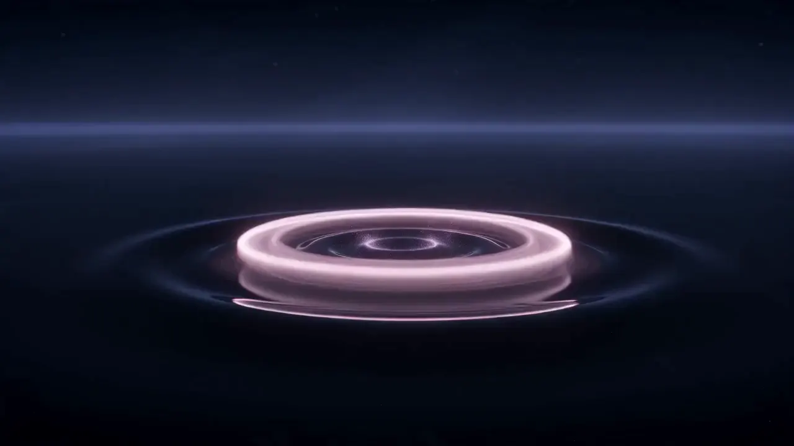
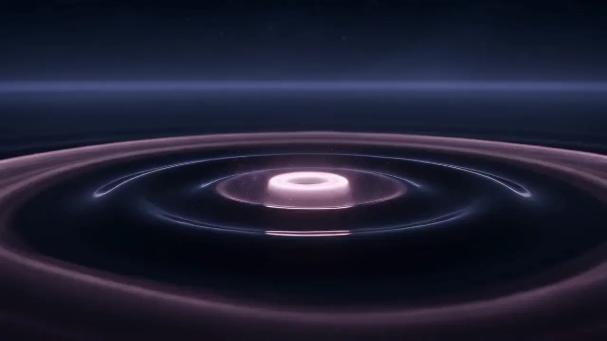
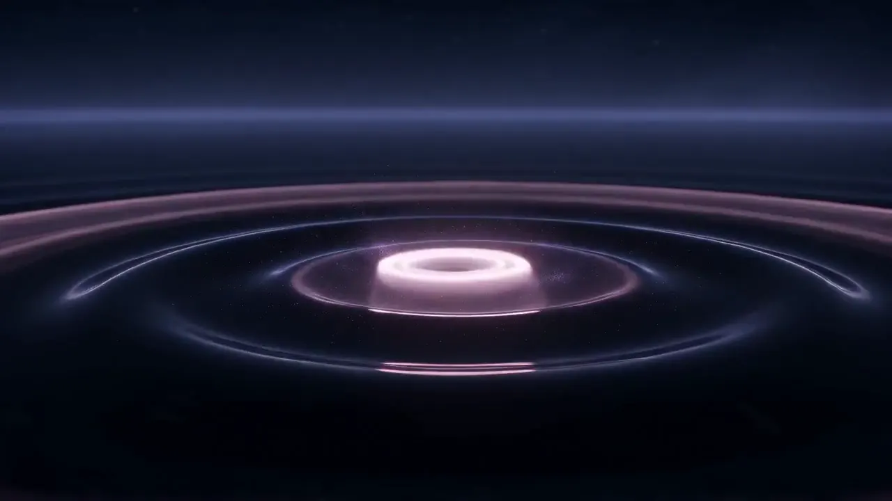

SignalGive the invisible a shape.
A spatial audio studio: 24 spatial mixes and 11 vinyl cuts so far, made with artists who build worlds in sound.
Signal is a sample brand. Every name and figure on this page is sample content.
Recorded in the room, mixed around you
Move your pointer across the page or drag the puck. Each track sits where it was placed in the mix, and the meters show how loud it is where you stand. This preview is silent.
Use the left and right arrow keys to move the listening position across the stereo field. The meters are drawn and the preview is silent.
- Low Tide ArchiveOrla Venn · 8.4 spatial mix4:12
- Glass ChoirMateo Sarr · 8.4 spatial mix6:48
- Night Bus, Line 9Imke Doyle · live to tape3:37
- Seven Rooms AwayOrla Venn · binaural mix5:21
- Copper WindThe Halden Trio · vinyl cut, 12 inch8:03
- Small HoursKofi Aldane · 8.4 spatial mix4:55
A room built to disappear
Nothing in Studio One colours the sound. It is a quiet box with twelve speakers placed where your ears expect them.
- Dimensions
- 9.2 × 6.8 × 4.1 m
- Loudspeakers
- 12 full-range, 2 subwoofers
- Channel format
- House format 8.4: eight at ear level and four overhead, plus the two subwoofers
- Monitoring
- Calibrated to 79 dB per channel
- Treatment
- Broadband traps, no reflective surfaces
- Tape machines
- Two 24-track machines, one half-inch stereo
- Noise floor
- Below 18 dB, with the machines off
- Minimum booking
- One day, 10:00 to 22:00


I stopped imagining the mix and started walking around it. The second night I left the headphones in the car.
- Spatial mixes
- 24
- Vinyl cuts
- 11
- Channel format
- 8.4
- Sessions per year
- 60
Bring a sound. We will build the room around it.
Tell us what you are making and when. We reply within two days with an open date and an engineer.
Signal is a sample brand from Landscape Lab. The preview is silent and the form sends nothing.Back to the Signal pageالعربية